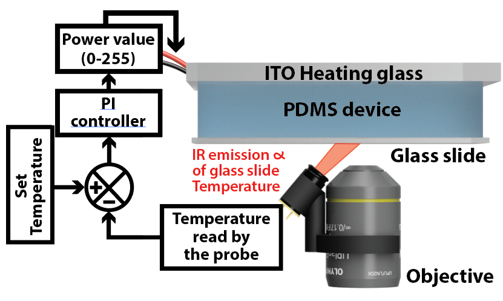

Microfluidic devices (click to access the CAD file and instructions)
Replicative aging of budding yeast

Device to trap single budding yeast cells and track them throughout their replicative lifespan.
Single-cell isolation and observation for mammal cells

Device to trap single mammal cells, submit them to drugs and perform timelapse movies. Was successfully used with mouse ES cell line derived from PKG12.1
Continuous filtration of cells

Device to separate cells from the media in a continuous manner. Works with budding and fission yeast but can be adapted to work with cells of a different size.
C. elegans observation

Device to immobilize C. elegans worms, submit them to drugs and perform timelapse movies.
In-chip harvestable cell culture

One key aspect of microfluidics is the control of the environment and its dynamics. I developed this device in order to submit a culture of cells to a given stress (ramp, short steps, ...), before harvesting it for biochemical assays. It is optimized for budding yeast, but could work with any non-adherent cells that are not sensitive to mild mechanical stress.
S. pombe and S. cerevisiae clonal aging

Device to trap single fission yeast cells and track them throughout their divisions. Can also be used to study clonal replicative aging in budding yeast (telomerase-deficient cells), with the daughter frequently replacing the mother in the trap.
Particle filter

Filter particles above a certain size by trapping them in PDMS microstructures. Typically used to filter dust or debris before a downstream critical microfluidic device.
Softwares, scripts and DIY devices
DetecDiv
DetecDiv is a MATLAB-based software developed by Gilles Charvin and myself to track large numbers of single cells in different contexts. For example, it can be used to automatically detect cell divisons and segment cell bodies, using deep-learning networks. It is particularly efficient when used on timelapse images of cells in microfluidics traps. DetecDiv also includes a GUI and a set of functions for data visualisation, manual annotation, plotting and export (figures, movies...)(See publication or Github repository).
Microfluidic heating device
Versatile and cheap heating system to keep any PDMS device at a given temperature. The equilibrium is reached slowly (~5min), so this might not be not suited for quick heat shocks, but it is perfect for cell culture.
Micromanager scripts, control of pumps and valves

3D printing designs

Thingiverse page: 
Communities, resources and softwares
Organoids, Organ-on-Chip and Stem cells & Biomaterials
GDR Organoids Groupe De Recherche Organoids by the CNRS
EUROoCS: European Organ-on-Chip Society
ESB: European Society of Biomaterials
ITB: Institute for Translational Bioengineering
ESB: European Society of Biomaterials
FSSCR: French Society for Stem Cell Research
Microfluidics, microfabrication and 3D design
GDR MNF: Groupe De Recherche Micro Nano Fluidique by the CNRS
"Chips and Tips" blog of the Royal society of chemistry: Resource describing useful micro and macrofluidic devices and tips.
Metafluidics: Open repository for microfluidic systems
COMSOL: powerful software to simulate physics, and in particular microfluidic mecanics, in order to optimize designs before going to production.
AutoCAD: powerful software for 2D CAD designs.
Fusion360: powerful software for 3D designs.
Thingiverse and Cults3D: online repository for 3D printing designs.
Microscopy
Micromanager: free and open-source software for the control and automation of microscopy-related hardwares.
Image.sc: forum gathering the microscopy and image analysis community.
Microlist: database gathering information about the microscopy & image analysis community: conferences, courses, softwares and tools.
ImaBio GDR: Community organizing the Mifobio annual meeting.
AI for biodata analysis
Bioimage.io: repository to upload trained machine learning networks as well as annotated datasets.
Modelzoo.co: repository to upload trained machine learning networks as well as annotated datasets.
Paperswithcode.com: repository to upload trained machine learning networks as well as annotated datasets.
Aging
List of resources (such as labs and companies) about aging by AgingBiotech.info
List of labs and companies working on aging by the de Magalhães Lab
List of labs and companies working on aging by Nathan Cheng
AnAge: The animal ageing and longevity database
SenNet: Cellular Senescence Network, program aiming at identifying and characterizing the different senescent cells across the body across lifespan.
ISCA: International Senescent Cell Association
Calico Labs | Altos Labs | Mayo Clinic | European Reasearch Institute for the Biology of Aging | MPI for the biology of ageing | Babraham Institute | Buck Institute for Research on Aging